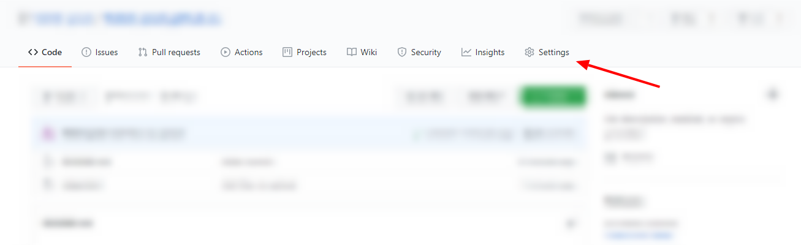
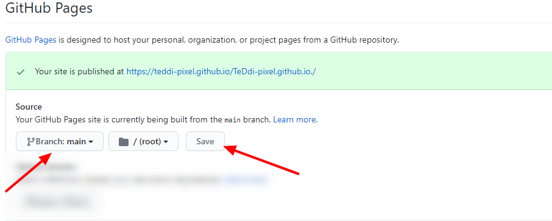
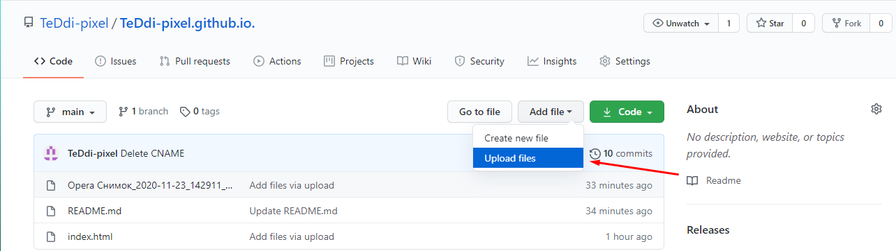
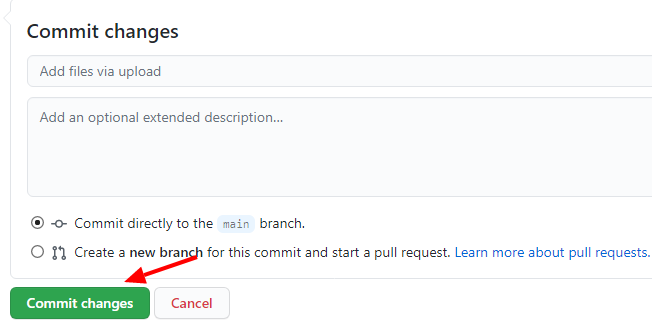

Налаштувати GitHub Pages для репозиторія. Цеможна зробити наступним шляхом:
1) Відкриваємо вкладку Settings

2) Знаходимо розділ GitHub Pages => Обираємо гілку main => натискаэмо Save

2. Як завантажити файли до репозиторію?
Відкриваємо головну сторінку нашого репозиторію
1) Обираємо розділ Addfile => Upload file

2) Обираэмо файл, який треба завантажити
3) Підтверджуємо обраний файл
